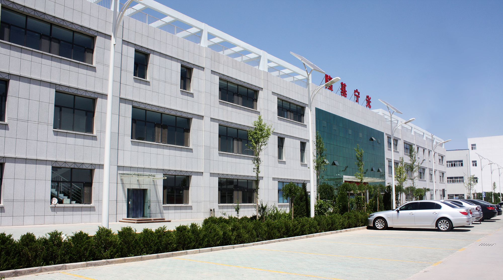

宁夏隆基宁光仪表股份有限公司始建于1968年，是中国第一只电子式电能表的诞生地。历经四十多年的发展，业已成为一家享誉全国的国家级高新技术企业，注册资本7000万元，拥有员工一千余名，智能电表、电水气信息采集设备、水表、气表、热量表年综合产能三千多万台，厂房总建筑面积两万多平方米，是中国北方最大的智能能源计量仪表生产基地。
公司经营范围：电能表、水表、燃气表、热量表等自动化仪器仪表；工业及民用仪器仪表：电力监测、用电信息采集系统及产品；太阳能等能源发电设备、太阳能等光热设备、LED等照明产品，灯具及配套产品：机电产品、高低压电器、建筑电器、输配电及控制设备的设计、制造、销售。
公司将多项新技术引入能源计量仪表领域，始终引领行业的发展。公司技术中心被认定为国家级企业技术中心，是一百多家能源计量仪表生产企业中仅有的三家之一。公司积极与国内众多知名高校合作，建立了多个联合研发实验室，参与研发的学者、教授、博士共计三十余名，形成了从高校专家（学者、教授）到企业工程技术人员近两百人的研发团队。
公司倡导绿色环保、网络智能理念，主要产品有智能卡式系列水表、超声波远传系列水表、光电直读系列水表、环保不锈钢水表及管理应用软件等。公司产品先后荣获中国名牌、国家免检、中国驰名商标、全国用户满意产品、建设部推广产品、中国水协推荐产品等称号。
公司在坚持科技创新的同时，也极为重视品牌塑造。作为国内和国际上都有很高知名度的“宁光品牌”，市场占有率和客户认可度与日俱增，2012年，宁光商标被认定为中国驰名商标。
一、技术与产品：
我公司的技术中心被认定为“国家级企业技术中心”，作为宁夏唯一一家获评“国家级企业技术中心”的能源计量仪表企业，公司充分发挥企业技术中心的引领作用，不断完善企业创新体系，带动整个宁夏地区、整个中国西部的智能化能源计量仪表的大发展。
同时技术中心设有“智能能源计量仪表国家地方联合工程实验室”，是国家创新体系的重要组成部分，该实验室搭建了一个前沿的创新平台，通过对制约行业发展的瓶颈技术的科技攻关，引领智能能源计量仪表的产业升级。
截止2014年12月，公司共获得国家授权专利39项，其中发明专利3项；获部、省级以上的奖项10项，其中国家火炬项目3项、国家重点新产品3项；参与国家标准的制定2项。
二、质量与生产
公司建立了一套完整的全面质量管理和质量控制体系，从了解客户需求的那一刻开始，质量控制贯穿于设计、生产、检验、售后服务全过程。
“可靠的产品源于可靠的设计”，历经几十载的技术积淀，隆基宁光摸索出一套完整的仪表设计与测试方案，设计开发的每个新产品都要进行多达几十项的测试验证，除了常规的功能测试、性能稳定性、例行型式试验外，还要进行极端严酷条件试验，保证用户在极端恶劣的电网条件下，仪表依然能够长期稳定地运行。
公司早在2001年就率先通过ISO9001质量体系认证、成为行业内最早通过该认证的企业之一，之后又通过了ISO14001环境管理体系认证、18001职业健康安全管理体系认证、中国质量认证中心(CQC)审核。
三、企业创新能力和实力展示
多年来，公司始终致力于电能表的技术创新和市场开拓，在电能表的行业发展史上留下了深刻的印记，也赢得了诸多殊荣。
◆国家级企业技术中心
◆中国驰名商标
◆国家地方联合工程实验室
◆高新技术企业
◆国家免检产品
◆宁夏著名商标
◆宁夏名牌
◆宁夏标志性品牌
◆宁夏银川市开发区纳税大户
◆宁夏“百强企业”
◆宁夏改革开放30年行业功勋奖
◆国家重点新产品3项
◆国家火炬计划项目3项
◆自治区科技进步奖3项
◆获部、省级以上的奖项10项
◆授权专利39项，其中发明专利3项
◆取得行业科技成果鉴定1项，自治区级科技成果鉴定5项
◆参与国家标准制订2项、行业标准制订1项